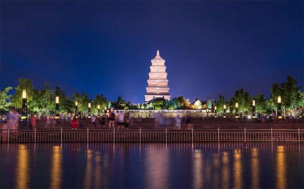

古塔景观照明
发布日期：2019-07-24
塔的特点是比较高大，往往是一个地区的标志性的构筑物。塔的造型极为丰富，一般与所在地的民族文化、历史背景有某种程度的呼应。关于塔的景观照明，应把握如下几点：
一、照明要塑造塔的整体性
塔体通常由基座、塔身、塔顶等几个基本部分组成，它们构成了一个和谐的整体。建筑师在进行设计时赋予了每个部分相应的含意。它们都有着相应的作用或功能，从美学角度看，其美学价值在于为一个区域竖立一个地标。所以塔体各个部分的完整照明表现十分重要，单单表现某一部分或厚此薄彼会异化塔的整体形象。
二、塔体各部分的照明设置要考虑观赏的需求
塔顶部分通常是供远距离观看，照明亮度宜适当高一些；塔身部分往往是细节丰富、承载建筑风格的部分，应有针对性地选择照明手法，细致刻画塔身构件及雕饰，用强调性的照明手法将塔身上主要的部分做突出表现；塔基座是近人部分，对该部分的照明表现是要完成塔体形象的完整性，对它们设置的照明要顾及到人们近距离处观赏时的感受，在照明的亮度、光色调、灯光投射方向等方面的配置，应以人的视觉舒适为目标。就整个塔体而言，自下而上，照明光的照度宜逐步增加，照明光色调宜由暖变冷。这样可以保证塔顶部分以较高的亮度供远距离观看，并且，塔顶偏冷一些的色调可以造成一种高耸感，也符合人们观看景物时近暖远冷的视觉规律。
三、照明手法要结合塔体的构造形式和材料
恰当的照明手法和用光方式是构成良好照明效果的基础，像层层出檐的中国古塔，虽然泛光照明是优先的选择，但分层设置灯具进行照明则更有利于对塔体的细致刻画，也能恰当地表现塔的神韵。